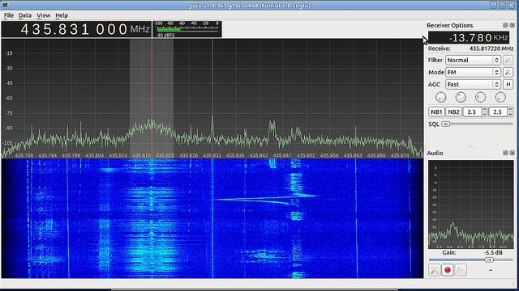
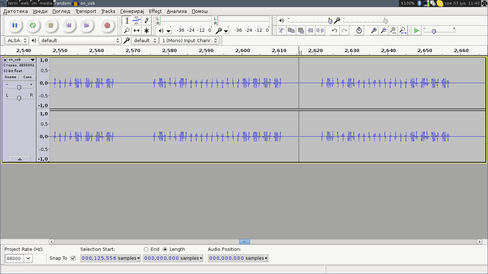
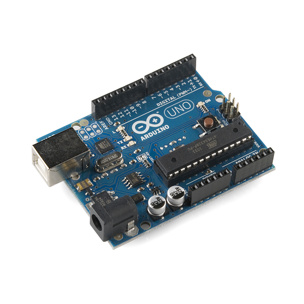

Анализа и синтеза на сигнали во домаќинството
Дамјан Георгиевски
Александар Лазаров
Го преставуваме
Слободен софтвер
и
хаклаб „КИКА“
Анализа на RF сигнал
rtl-sdr 15$ (ebay)
Спектрална анализа
20 - 1700 Mhz
(на сликата gqrx)
gnu radio
433Mhz даљинско
AM/OOK/PWM
нешто за што немав чуено до завчера :)
декодер
github.com/merbanan/rtl_433Синтеза (или симулација)
на RF сигналот
2$ (ebay)
Arduino

10$ (ebay, fasttech)
Малку код

можеби работи?
Анализа на IR

од даљинско за клима уред (samsung)
Stellaris Launchpad
2x Cortex M4 за 12$ (Texas Instruments)
IR receiver
1$ (ebay)
firmware
github.com/sodnpoo/sllogicloggersoftware
www.lxtreme.nl/olsСинтеза
повторно Arduino
IR диода
цена? права ситница!
А да пробаме со климата на факултетот?